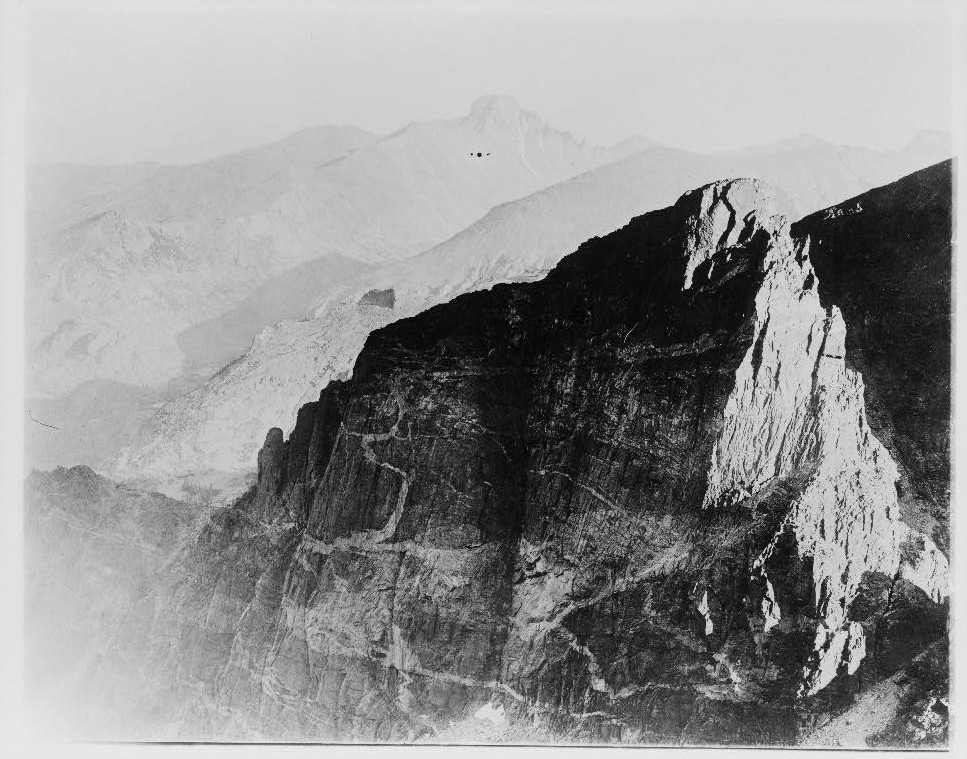
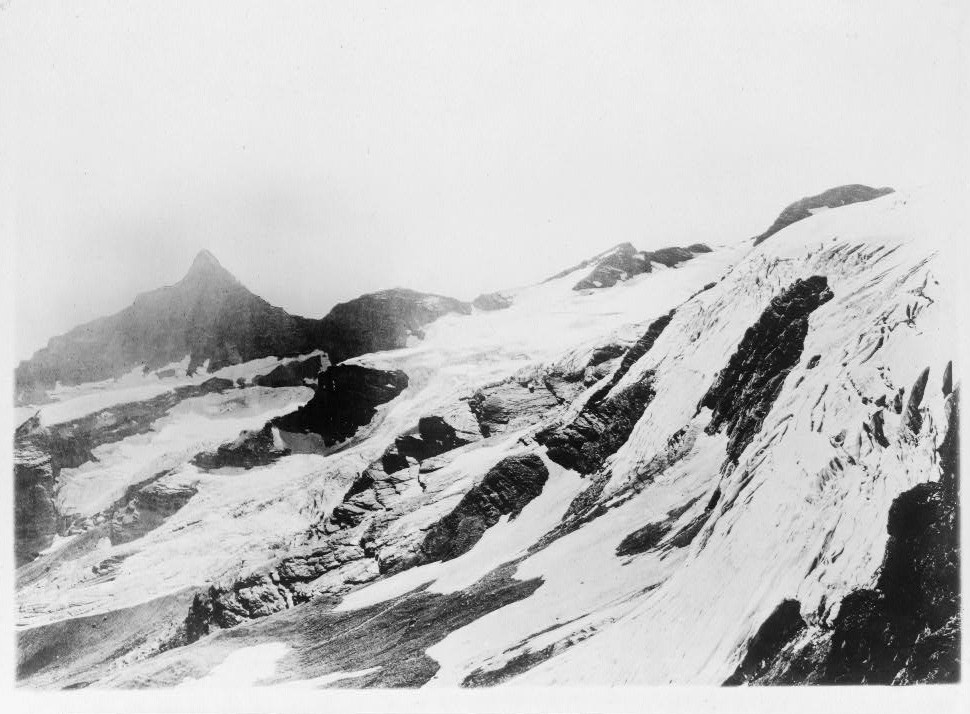

Part I: Reflecting
Occasionally one reaches a position of advantage from which they are able to exercise a larger freedom. Finding myself briefly in such a position, I took advantage of it by gathering my thoughts, and trying to consolidate these projects, interests, arguements and inspirations free-floating without structure, and distilling from them some sort of common material.
Since the last time I did this almost everything has changed. That previous experiment named A Fool's Gnosis was not so much a deep and thorough study of any one subject, but a synthesis of loose ends (magic, ecology, personal myth, and dreams); with hindsight, these loose ends look to have been tied into something like a manifesto, certainly a stylistic error, but one lives and learns.
There is now an entirely new set of loose ends, and they live amongst the links and documents in this website as on-going pieces of research. They seem to me to stand entirely apart from one another, at least in practice, and now I have the time to look for the frame that will hold them together.
My thoughts on the vertical structures of the imagination were the best place to start. What are they, and where did they come from?
My acquaintance with the theory of psychoanalysis, having primarily flirted with the archetypal school: this would be my first explanation, and one which I would have had no questions about, had I stayed loyal to that particular niche. Breaking from it has taught me that psychoanalysis is certainly talking in these terms, but by no means does it own them. Historians like Michael Sahlins are engaged in thinking and writing which (for my money at least) bears an obvious resemblance to some of my favourite psychoanalytic and archetypal texts, but has used a completely different method and body of knowledge to get there.
My first observation then, is that making a commitment to one discipline seems an unneccesary and possibly unhelpful filter. Sahlins himself invoked the academic term for this method of openness: interdisciplinarity, which as far as I am concerned, means considering a variety of opinions, being able to interpret in multiple registers, and seeing the applicability of diverse contributions.
But the naming of the method is only tangential to the main question; what is this an interdisciplinary study of? What is its purpose?
A potential answer; to understand a master-narrative. This is at least close to the mark. Verticality may not neatly fit the definition befitting a narrative, but it is something like one.
A second answer; it is an existential survey. The primary proposition at the heart of the document is that the vertical directions are endowed with meaning (ascent is associated with the good and desirable and descent is associated with the bad and undesirable). I ask, how does a direction take on meaning and why? This is not an insane question; similar questions are fruitfully asked all the time, but for some reason, not many people really ask or investigate this one. Archetypal scholars themselves talk in terms of vertical directions and rarely notice. Hell, even Nietzsche seems comfortable to leave verticality as it is during his revaluation of all values.
A third answer; a 'Heideggerian' attack on Metaphysics. I do not know that I subscribe to this though, since I am not certain that to ask such a question subverts metaphysics as much as it deepens the problems presented by it.
Another answer, an alternative to Heideggerian hostility in the domain of metaphysics; a hermeneutics of images. In this regard, the connections between the verticality project and several others, particularly those dealing with symbols and dreams is disclosed. But hermeneutics is a slightly obscure field, and would require a fairly large commentary to clarify. Intimidated by such a grandiose project, I will, for the time being, offer a preliminary definition of what I mean: A hermeneutics of images is a theory of interpretation and communication which treats non-verbal sensory information as a distinct category operating with a perculiar grammar (or even variety of grammars). It considers the possibility that images have a different origin, and are therefore a wholly different mechanism from discourse and the discurive interpretation of normal language, but invites exegesis and interpretation nonetheless.
From here I arrive at a new possibility regarding this project, and possibly others; it is an attempt to build a bridge between phenomenology and metaphysics, and even the naturalistic outsider to both.
Another possibility again, and cthe coining of a term I personally have not yet heard; non-dual scholarship. This building of bridges does not deny the phenomenological-naturalistic-metaphysical dualism, nor does it deny their 'being one'. It treats them as continuous, or partially continuous, and works on them without prejudice.
Such an idea has left me reaching already for alchemical vocabulary. Being non-dual in thought means operating outside of the usual 'out with the old, in with the new' discursive style. What I mean by that, is discursive knowledge tends to be substitutive, forever replacing previous vocabularies and explanations for the purposes of precision and truth. This is why it could be considered dualistic; the unspoken logic of discursive knowledge building is that there is an imprecise articulation of the facts, and an improved articulation of the facts (I also like to call this a contaminated paradigm, and a pure paradigm). To be non-dual in that case, means rather to operate by seperation, distillation, preservation, recombination, experimentation, improvement, but never substitution. Whether the two modes are truly orthogonal I am not in a position to say, this is pure conjecture.
Another non-discursive possibility for what binds these interests; they are an archive, a record, a solliloquy. The connective tissue may not be related to knowledge at all, and might just be a desire to document personal processes: with regards to the verticality project, the process of disclosure, scrutiny, interpretation, comparison, judgement, and transformation of my personal, spatial roots.
As a process of disclosure, Heidegger again rears his head, but who else can be heard? Could this process be understood as yoga? I can think of several texts that track with this immediately. The words of Padmasambhava, who percussively asks his reader to "look at your own mind to see whether it is like that or not" is in this ballpark. Reading this for the first time felt to me like philosophical permission to become ones own ultimate authority, and certain Saivite texts similarly instruct.
That is all I have to say on that for now.

Part II: The Primordial
Moving on, I was recently exposed to the word urphänomen, and found it filled a conceptual gap in my writing. Verticality requires treating as both an urphänomen--a primordial phenomenon--and a metaphor, but bringing both into focus at the same time as a continuity creates paradoxes. This tracks with one of my first observations about the tautological justification for the value-schema of vertical metaphors.
The vertical directions can be condsidered an urphänomen since they present themselves as a given; they are universal, immediate, and self-disclose with such force that they seem prior to experience. But in their giveness, they present certain intrinsic qualities: the directions are not neutral voids with interpreted meanings, but in their embodied primacy there is already readable qualities. These qualities have later lent themselves well to schematised metaphorical speech, and talking in terms of vertical directions became a shorthand for expressions of value precisely because of their implicit difference and utility.
Where paradox creeps in is at the point where metaphor and urphänomen reverse roles; when cosmological or metaphysical schemas employ value-laden metaphors as an explanation for the meaning of concrete, primordial space itself.
This is a fairly convoluted point (as paradoxes usually are), so I will try to state it architecturally first:
Urphänomen --> Given qualities of the urphänomen --> translation to metaphor and schematisation as value --> use of metaphor and schema to represent constraints by which the urphänomen is understood.
I can only assume, but this must have been an extremely long, and even unconscious process, but it can certainly be seen in the real world. The sacralisation of high places which can be seen in mountain worship and tower building is never understood in terms of somatic reality, nor is its somatic basis offered a metaphysical significance. The sacredness of high spaces begins at the level of symbolic experience: the mountain is sacred because it is high, the church tower reaches up because noble things are lofty and elevated. People have become content to accept this tautological version of space. Of course, it may be no such thing, and the divine order may be oriented in terms of spatial directions, but this is unlikely when considering the developments in the scientific understanding of what these directions actually are: tangential angles to the surface of a spheroid, or terms describing the direction of the effect of gravity.
The metaphysical interpretation of space, which buried any somatic, primordial contribution is as much a historical process as the scientific description of its directions being contingent on gravity. Both have the effect of modulating the givenness of primordial space at the somatic or affective level. An arguement could be made that verticality is not an urphänomen at all, and is always either an illusion derived from living within a gravitational field, or a symbolic representation of value. Both imply discursivity and processes of history, and both seem to have much more force than any primoridal, embodied knowledge of gravity and direction itself.
Perhaps gravity is simply a messy phenomenon, its givenness being the experience of verticality as a 'dead given' hidden beneath metaphysical and metaphorical schemas, or in discontinuous phenomena such as falling, walking, climbing, and leaping. Perhaps gravity is not so readily disclosed (dis-closed, meaning seperation or ceasation from closure) and does not share in being and non-being as Heidegger described them. The vector of disclosure along which verticality moves is not a continuous and consistent gradient from 'closed' --> 'disclosed', possibly because it is not 'being' in the same way as other things. This is at least the state of affairs I find when trying to examine the being of verticality as given by the world, and I have found it unsatisfactory.
Addendum
So to returning to the earlier question of what lies behind these various interests, one further thought: a hostility toward the 'dead givens' I find in the world. My written projects, and this non-dual approach, are all in service of disclosure; something a Heideggerian should understand if no one else does. They are care for the parts of being which appear to have been prematurely closed, or disclosed in a way which negates their vitality.
I expect this happens not through historical processes rather than through fault, but the effects are not negligible. They have taken something vast, infinitely vast--experiences of space, life, joy, God, pain, and so on--and reduced them to slogans. They suit a lazy acceptance of metaphor as a ground, and treat it as elevated. They are, then, worse than wrong; they are dead, and have been killed for convenience. My thinking and writing is an attempt to re-disclose and re-vitalise, and care for being, regardless of notions right and wrong. All these projects, not least the verticality one, are wrongly understood as Nietzschean re-valuations, since subsitituion has been left at the door.
Again, that is all I have on this for now. Thanks for reading.